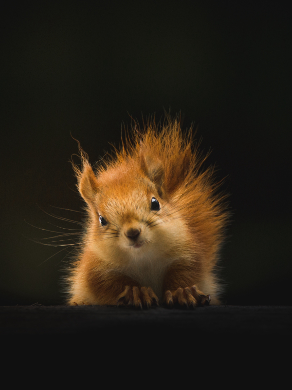
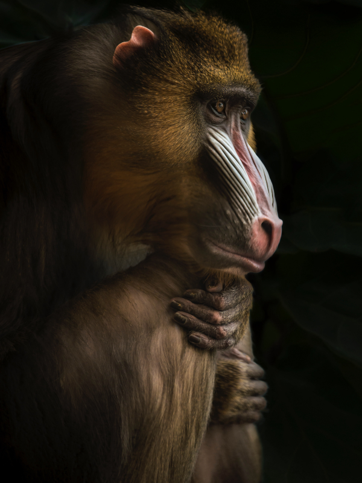
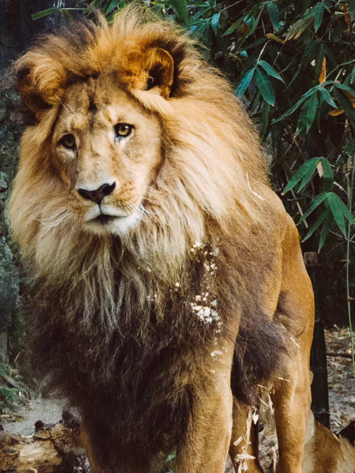

Animais Fantásticos






Raposa
As raposas são animais mamíferos e onívoros pertencentes à família Canidae. São vulpídeos de porte médio, caracterizados por um focinho comprido e uma cauda longa e peluda.
Também apresentam como particularidade suas pupilas ovais, semelhantes às pupilas verticais dos felídeos.
De cerca de 40 espécies reconhecidas como raposas, somente 12 pertencem ao gênero Vulpes das "raposas verdadeiras", do qual a raposa vermelha é a mais comum.
As raposas são animais mamíferos e onívoros pertencentes à família Canidae. São vulpídeos de porte médio, caracterizados por um focinho comprido e uma cauda longa e peluda.
Esquilo
Os esquilos pertencem a uma grande família de mamíferos roedores, de pequeno e médio porte, conhecida como Sciuridae. No Brasil, são também conhecidos como serelepe, caxinguelê, caxinxe, quatimirim, quatipuru, agutipuru ou acutipuru.
Na Galiza e em algumas zonas de Portugal, também são conhecido por esquio.
Os esquilos estão espalhados por quase todo o mundo, a maioria nas zonas de climas temperado ou tropical, mas também em algumas zonas de clima frio. Como todos os roedores, possuem presas fortíssimas, com que roem facilmente sementes, principalmente bolotas.
Urso
Os Ursos (latim científico: Ursidae) constituem uma família de mamíferos carnívoros de grande porte, contendo os ursos e os pandas. Eles são classificados como caniformes ou carnívoros caninos.
Os ursos são encontrados nos continentes da América do Norte, América do Sul, Europa e Ásia.
As características comuns dos ursos modernos incluem corpos grandes com pernas atarracadas, focinhos longos, orelhas pequenas e arredondadas, cabelos desgrenhados, patas plantígradas com cinco garras não retráteis e caudas curtas.
Lobo
Lobo é um animal carnívoro da família dos canídeos e que pertence ao gênero Canis.
São três espécies que recebem tal designação: o lobo-cinzento (Canis lupus), lobo-etíope (Canis simensis) e o lobo-dourado-africano (Canis lupaster). O lobo-oriental (Canis lycaon) e o lobo-vermelho (Canis rufus), possuem classificações discutíveis se espécies em si, subespécies do lobo-cinzento, ou híbridos de lobo com coiote (coylobo).
Os lobos geralmente ostentam um porte maior em comparação às demais espécies de canídeos, além de possuírem ampla distribuição geográfica.
Babuíno
Babuíno é a designação genérica para antropoides cercopitecídeos do gênero Papio e afins, caracterizados pelo focinho pontudo, caninos grandes, bochechas volumosas e calosidades nas nádegas. É um animal semi-quadrúpede da ordem dos primatas que mede até 120 centímetros de comprimento
Ao contrário dos macacos, os babuínos passam a maior parte do tempo no chão. Suas caudas não são preênseis. Os babuínos são grandes lutadores e demonstram pouco medo de outros animais, inclusive seres humanos. Todos têm hierarquias fortes e complexas dentro dos grupos familiares.
Os babuínos são onívoros (omnívoros), isto é, comem muitos tipos diferentes de alimento. A sua dieta, entretanto, varia de acordo com a estação do ano, o território que está sendo habitado, a idade e o sexo do indivíduo.
Leão
O leão [feminino: leoa] (nome científico: Panthera leo) é uma espécie de mamífero carnívoro do gênero Panthera e da família Felidae.
. A espécie é atualmente encontrada na África subsaariana e na Ásia, com uma única população remanescente em perigo, no Parque Nacional da Floresta de Gir, Gujarat, Índia. Foi extinto na África do Norte e no Sudoeste Asiático em tempos históricos, e até o Pleistoceno Superior, há cerca de 10 000 anos, era o mais difundido grande mamífero terrestre depois dos humanos, sendo encontrado na maior parte da África, em muito da Eurásia, da Europa Ocidental à Índia, e na América, do Yukon ao México.
É um dos quatro grandes felinos, com alguns machos excedendo 250 quilogramas em peso, sendo o segundo maior felino recente depois do tigre.